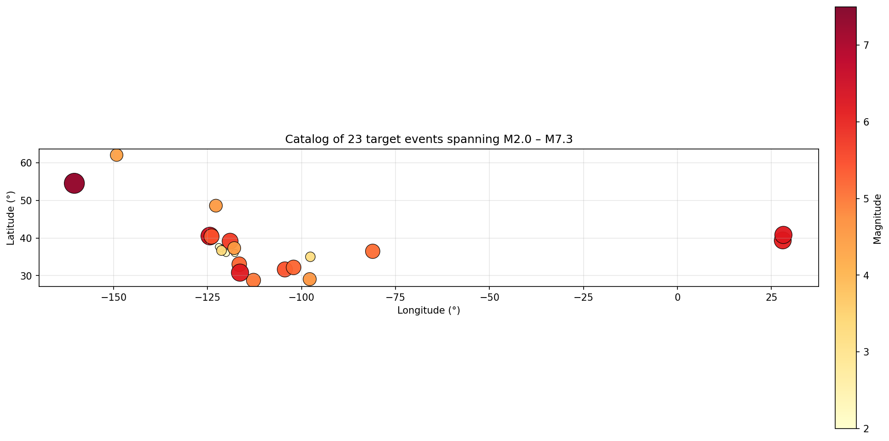
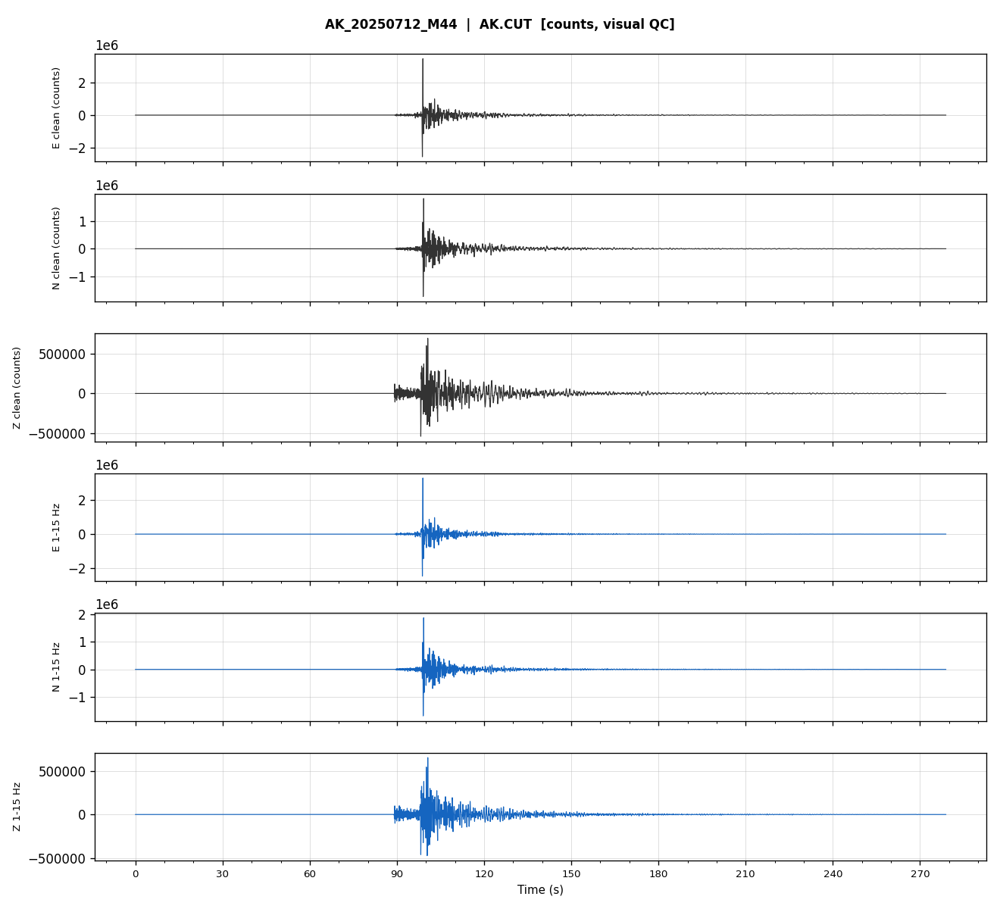
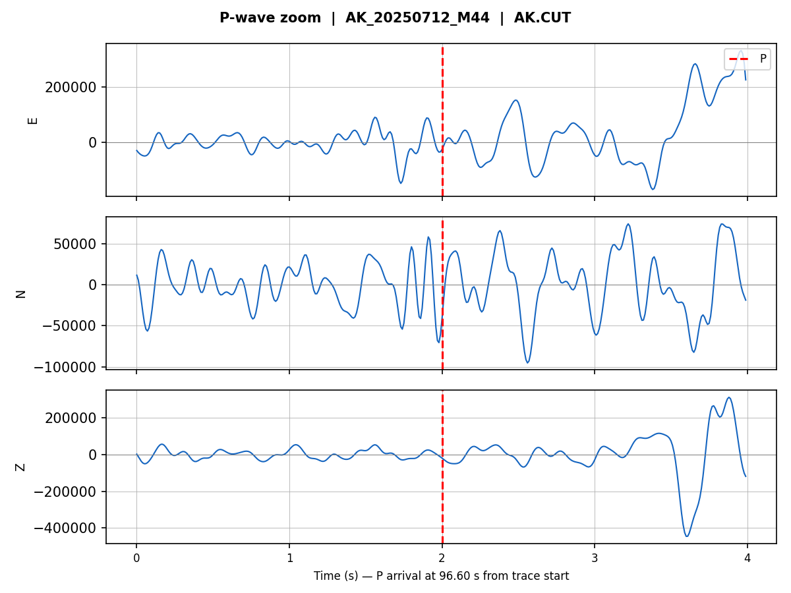
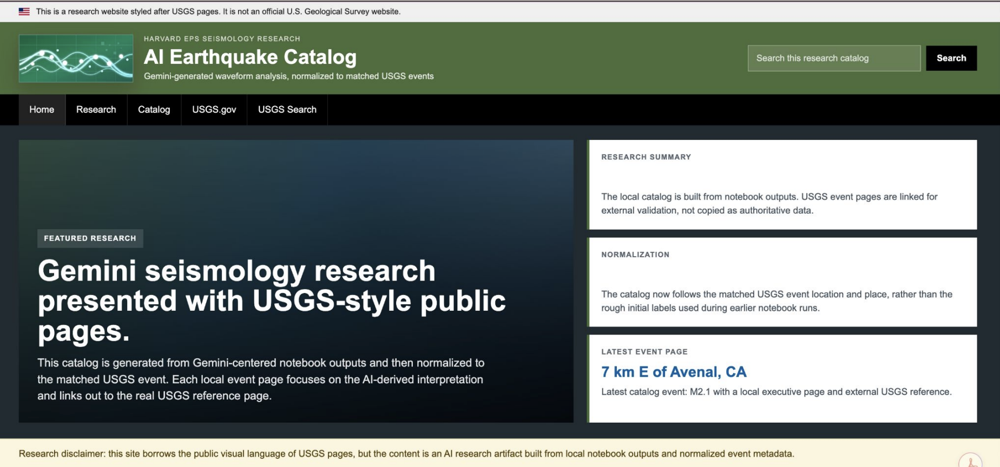
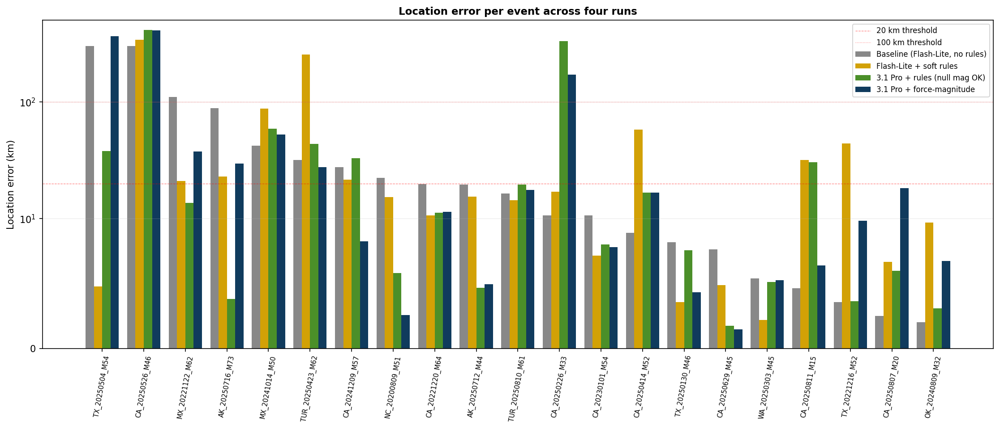
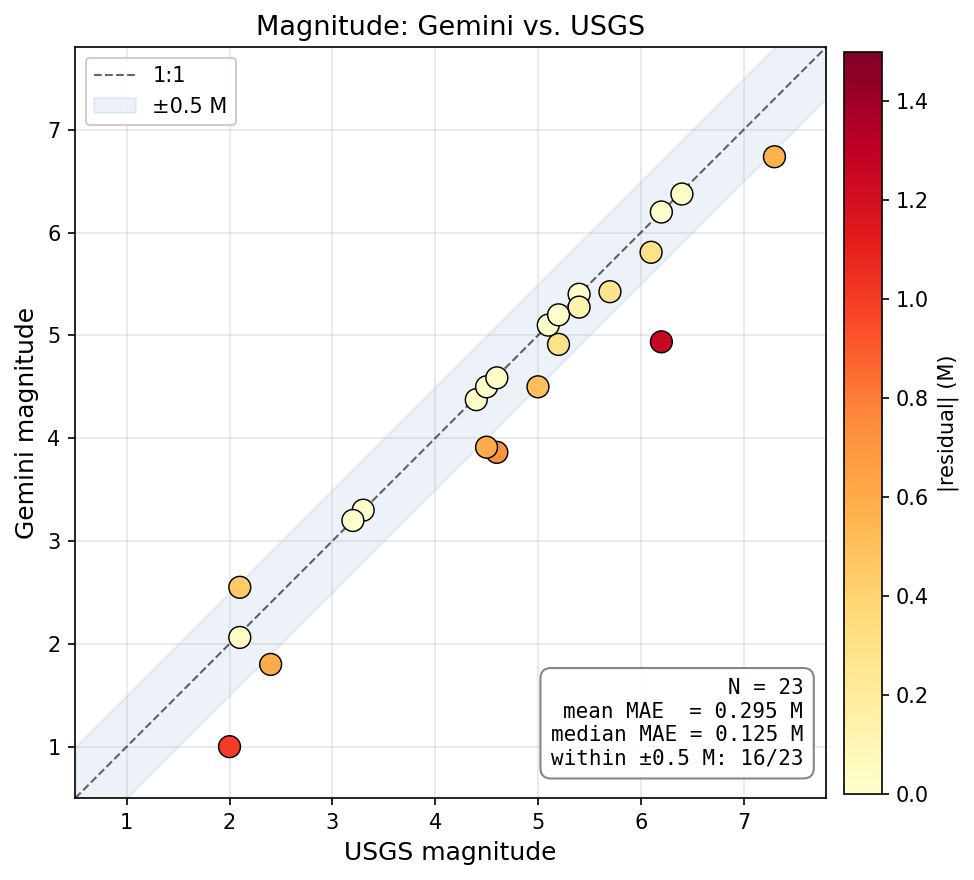
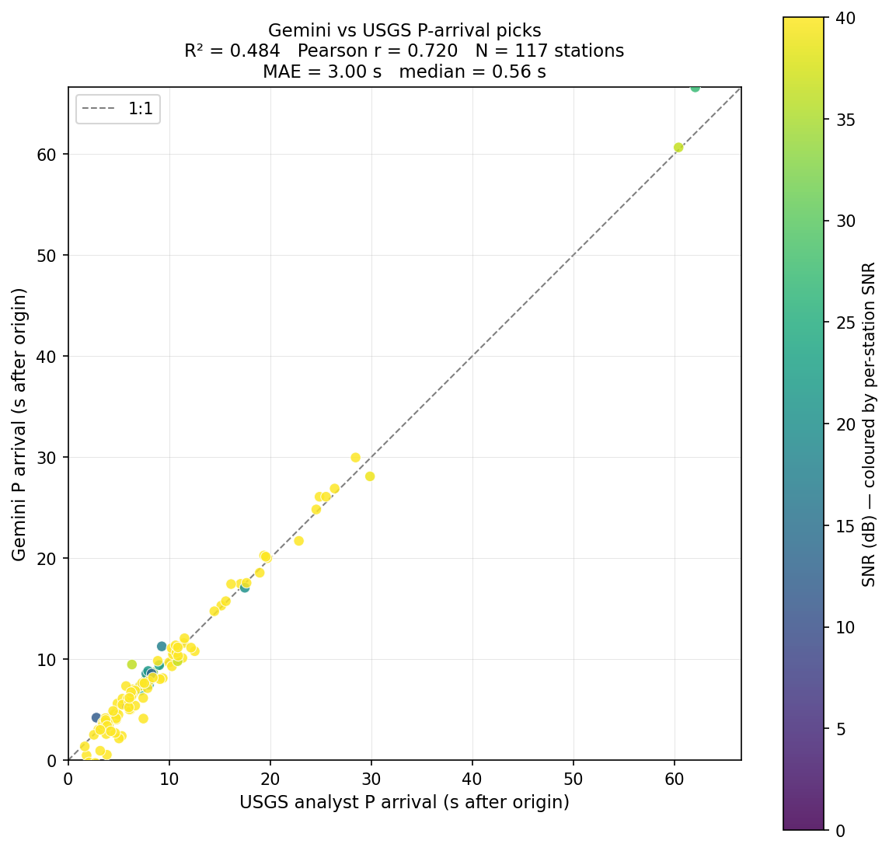
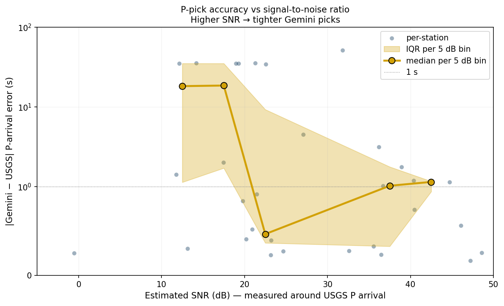
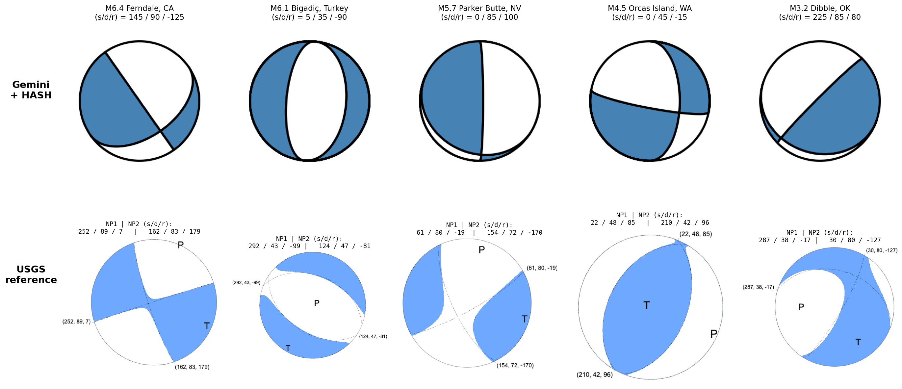

Research note
Can Gemini Read an Earthquake?

This research project asks a simple question with a lot hiding underneath it: can a multimodal LLM look at seismogram images and do pieces of the work a seismologist normally does?
The paper studies Gemini on three-component waveform images. The model is asked to classify waveforms, pick P and S arrivals, estimate earthquake magnitude, help locate events, and read first-motion polarity. Those outputs are then placed inside a larger deterministic seismology pipeline, where early model mistakes can propagate into downstream location and focal-mechanism estimates.
The short version is that Gemini is useful for some parts of the workflow and very bad at others. It can produce phase picks good enough to support earthquake location under reasonable station geometry, and it can estimate magnitude surprisingly well from raw-count waveform images when forced to commit to a number. But first-motion polarity reading stays at chance, even when the input window is centered on the analyst's published P pick.
The main lesson is not "LLMs can do seismology." It is more specific: multimodal LLMs can be useful scientific workflow components when their outputs are paired with deterministic algorithms and uncertainty checks, but they fail sharply on tasks that require subtle signal-level visual discrimination.
Why this is not just image classification
A basic benchmark would ask the model to label an image as earthquake or noise. That is useful, but it is not what a seismologist's workflow looks like. In a real analysis pipeline, a waveform interpretation becomes an input to another computation. A P pick affects a location. A polarity affects a focal mechanism. A magnitude estimate affects how the event is triaged and interpreted.
That is why the project was designed as an end-to-end workflow instead of a single classification task. The LLM is only used at the stages where visual interpretation is needed. Everything else is deterministic Python: waveform retrieval, plotting, location inversion, uncertainty diagnostics, polarity comparison, and summary-table generation.
This matters because it lets us separate different kinds of failure. If a location is bad, that might be because Gemini picked the phase badly. But it might also be because the station geometry is terrible. If a focal mechanism is wrong, that might be because the HASH inversion is wrong. Or it might be because the polarities going into HASH are basically random. The paper tries to isolate those cases instead of mixing them into one overall score.
The data
The project starts with controlled waveform datasets and then moves to a real-event earthquake catalog.
The controlled phase used STEAD, the Stanford Earthquake Dataset, accessed through SeisBench. STEAD is useful because it contains labeled three-component seismograms with metadata such as magnitude, depth, distance, and signal-to-noise ratio. But STEAD also has a limitation: the earthquake traces used here are mostly local and regional events. Early experiments on STEAD alone made the model look better at classification than it really was, because the data did not fully represent teleseismic signals, explosions, landslides, and other non-earthquake sources.
To broaden the task, the dataset was merged with CREW teleseismic records and Pacific Northwest records containing explosions and landslides. After filtering depth artifacts and samples outside the final bin definitions, the merged dataset contained 118,400 samples. These were stratified by distance, magnitude, depth, and SNR so the model could be tested across physically meaningful regimes rather than one convenient slice of the waveform world.
The main results come from a curated catalog of 23 real earthquakes. The catalog includes small California events, induced-seismicity events in Texas and Oklahoma, offshore and sparse-network cases, Alaska events including a M7.3 earthquake, Mexico events, and two Turkey events served through AFAD waveform data. The point was not to select only clean examples. The point was to see whether an LLM-based pipeline could survive the messy conditions that appear in actual seismological work.
The waveform images
Each station-event pair is rendered as an image before being passed to Gemini. The main seismogram-interpretation input has six panels: raw east, north, and vertical components on the top row, and the same three components after a 1.0-2.0 Hz Butterworth bandpass on the bottom row.

This visual representation ended up mattering a lot. Earlier plots used sample index on the x-axis, and the model often failed to translate samples into physical arrival times. The final plots use seconds since trace start, adaptive major ticks, and one-second minor grid lines. The inputs are unmarked: there are no ground-truth P or S arrival markers drawn on the image, because that would leak the answer into the prompt.
The polarity task uses a different image: a four-second zoom around the P arrival, high-pass filtered at 3 Hz. This is meant to sharpen the first motion, which is the initial upward or downward deflection used in focal-mechanism analysis.

The pipeline
The real-event catalog pipeline has eight stages. Only two are LLM calls.

First, the catalog selects an event and fetches event-level metadata from USGS when available. Second, it retrieves three-component waveforms from regional FDSN data centers such as IRIS/EarthScope, SCEDC, NCEDC, TEXNET, KOERI, and EIDA routing. Third, it generates the waveform images. Fourth, Gemini performs the seismogram-interpretation pass, returning a structured 19-field JSON object. Fifth, Gemini performs a separate polarity-reading pass on the zoomed P window. Sixth, the P picks are inverted for earthquake location with Geiger's method and Levenberg-Marquardt damping. Seventh, the polarities are passed into a pure-Python HASH-style focal-mechanism grid search. Eighth, the outputs are compared against USGS or analyst references.
The seismogram-interpretation JSON includes waveform classification, distance class, depth class, P arrival time, S arrival time, P-wave and S-wave type, first motion, surface-wave indicators, back-azimuth, incident angle, epicentral distance, depth, magnitude, magnitude type, origin time relative to P, and a short reasoning string.
The separation between LLM and deterministic stages is important. It means the model is not being asked to magically "solve seismology." It is being asked to produce structured visual interpretations that can be audited, compared, and inserted into conventional physical procedures.
Prompt design
The prompt changed several times during the project. Three changes mattered most.
First, an early "anti-spike" rule refused to pick phases before 20 seconds into the trace. That was meant to suppress spurious early picks on noisy images, but it badly hurt legitimate noisy events. It was removed and replaced with softer consistency checks.
Second, magnitude type had to be controlled. If Gemini predicted moment magnitude while USGS reported local magnitude, the error metric became confused. The final prompt used a per-event magnitude-scale token, so the model was asked to estimate the same scale as the USGS reference, either ML or Mw.
Third, the larger Gemini model often refused to estimate magnitude from raw-count waveforms because instrument response was missing. Scientifically, that caution is reasonable. But for the experiment, it made magnitude evaluation impossible. The final prompt therefore forced a numerical magnitude estimate even when calibration was incomplete, asking the model to use waveform amplitude, duration, and scale-specific rules of thumb.
The five-run experiment
The catalog results are organized as a five-run progression. Each run changes one part of the system while keeping the rest fixed.
- Run 1: Gemini 2.5 Flash-Lite, minimal prompt, no consistency rules, no forced magnitude, and a Nelder-Mead simplex locator.
- Run 2: Same model, but with soft prompt rules enforcing consistency between distance class, numerical distance, and phase behavior.
- Run 3: Gemini 3.1 Pro replaces Flash-Lite while magnitude is still allowed to be null.
- Run 4: Gemini 3.1 Pro is forced to emit magnitude, and the locator is replaced with a Geiger inversion using Levenberg-Marquardt damping.
- Run 5: The final version adds azimuth-balanced station selection, analyst-centered polarity zooms where available, and per-event magnitude-scale substitution.

Run 5 has the best median result across the main metrics: median location error of 9.6 km, magnitude mean absolute error of 0.295, and magnitude median absolute error of 0.125. But the run progression also shows why a single score is misleading. Some improvements come from model capability. Others come from prompt constraints. The largest location improvements come from deterministic infrastructure and station geometry, not from the LLM alone.
Magnitude: the surprising positive result
The most surprising positive result is magnitude estimation. In the final run, Gemini estimates earthquake magnitude from raw-count waveform images with mean absolute error of 0.295 magnitude units and median absolute error of 0.125 on the requested USGS magnitude scale. Sixteen of 23 events are within 0.5 magnitude units, 21 of 23 are within 1.0, and 13 are within 0.1.

This is interesting because the model does not have instrument-response-corrected ground motion. It is looking at waveform images in raw counts. The result suggests Gemini can infer useful magnitude proxies from amplitude, duration, coda shape, and other visual cues. This is not a replacement for calibrated seismological magnitude estimation, but it may be useful for first-pass triage.
Phase picking: useful above the SNR floor
Phase picking is evaluated against analyst P picks from USGS phase data. Across 117 matched station-event pairs in Run 5, the median absolute residual is 0.56 seconds. The Pearson correlation between predicted and analyst arrival time is 0.72. About 46% of picks fall within 0.5 seconds, 67% within 1 second, and 85% within 2 seconds.

The mean absolute residual is worse, around 3.0 seconds, because the error distribution is heavy-tailed. A few low-SNR cases dominate the mean. Stratifying by SNR makes the pattern clear: traces above about 20 dB SNR have median pick residual around 0.5 seconds, while the 10-20 dB bin jumps to roughly 18.6 seconds.

This is exactly the kind of result that matters in deployment. The useful claim is not "Gemini can always pick phases." The useful claim is "Gemini-derived picks can be trusted only above a measurable SNR threshold, and should be rejected below it."
Location: the model is not the whole story
Earthquake location is computed from Gemini-derived P arrivals using Geiger's method. Depth is fixed to the USGS value, and the inversion solves for latitude, longitude, and origin time under a constant P-wave velocity of 6.0 km/s. The implementation reports uncertainty diagnostics such as azimuthal gap, condition number, RMS residual, and horizontal error ellipse.
In Run 5, 21 of the 23 events are locatable. The median epicentral error is 9.6 km. Eleven events are below 10 km, and 14 are below 20 km. After a geometric quality-control filter retaining only events with azimuthal gap below 250 degrees and condition number below 10,000, the median drops to 6.6 km on 16 trustworthy events.
The important point is that the bad cases are not mysterious. The four events above 100 km error all have large azimuthal gaps and ill-conditioned inverse problems. In other words, even good phase picks cannot rescue a location if all the stations are on one side of the earthquake or the network geometry is fundamentally underconstrained.
That makes location a mixed task. Gemini contributes useful P picks, but location quality is dominated by station geometry and inversion stability. The deterministic uncertainty diagnostics are not just after-the-fact explanations; they can flag untrustworthy locations before comparing to ground truth.
Polarity: the hard negative result
First-motion polarity is where the pipeline fails most clearly. The polarity task asks whether the first P-wave motion is up or down. That sounds simple, but in practice it can be a subtle visual discrimination problem, especially on noisy traces.
Earlier versions of the pipeline centered the polarity zoom on Gemini's own P pick. That left an ambiguity: maybe Gemini could read polarity, but the zoom window was sometimes centered on the wrong time. The final experiment removes that confound. When USGS analyst P picks are available, the polarity zoom is centered on the analyst's published pick instead of Gemini's pick. A 3 Hz high-pass filter is applied to make the onset sharper.
Even then, polarity agreement is 47.1% across committed UP/DOWN pairs, basically chance. On the subset where the window is centered on the analyst pick, agreement is 33.3%, although that slice is small. On high-SNR traces, agreement reaches only 55.3%, still barely above chance. The model emits UP about 55% of the time regardless of analyst polarity, and there is no clean systematic flip that could be corrected by relabeling.

This is the cleanest negative result in the paper. It rules out the easy explanations. The failure is not just bad window placement. It is not fixed by high-pass filtering. It appears to be a vision-model capability ceiling for subtle first-motion features in this catalog's SNR and magnitude regime.
What the paper says overall
The results split into three categories.
First, some tasks are directly useful. Magnitude estimation, when forced and evaluated on the correct scale, is much better than expected. Phase picking is useful above an SNR floor. These are the tasks where the model can extract enough signal from a waveform image to support a workflow.
Second, some tasks are useful only when paired with deterministic checks. Location is the main example. Gemini-derived picks can support good locations, but only when station geometry is adequate. The location result should be trusted through the inversion diagnostics, not through the model's confidence.
Third, some tasks are not ready. First-motion polarity reading does not work in this setup. Because polarity is the input to focal-mechanism estimation, the focal mechanisms fail downstream. The correct conclusion is not to report optimistic beachballs, but to report the polarity failure directly.
Limitations
The real-event catalog has 23 manually curated events. That is enough to probe the workflow, but not enough to claim general deployment readiness. The catalog is heterogeneous, but still weighted toward local and regional events, especially in the western United States.
The location inversion is also simplified. It uses a constant P-wave velocity and fixes depth to the USGS value. A production locator would use more realistic velocity models and more complete uncertainty handling. The HASH stage is also simplified relative to professional focal-mechanism workflows.
The results are Gemini-specific. The primary catalog results use Gemini 3.1 Pro at temperature 0.1, with observed run-to-run drift in location and magnitude. Other multimodal LLMs might behave differently, especially on polarity or low-SNR picking.
Finally, the study treats USGS phase picks, magnitudes, polarities, and mechanisms as reference values. Those references are analyst products with their own uncertainty, especially for small or sparsely recorded events.
What I take from it
I think the most interesting part of the project is not that an LLM can look at a seismogram and say something plausible. Models are very good at plausibility. The interesting part is seeing what happens when those outputs are forced into a physical workflow where they either support a downstream computation or they do not.
That framing makes the result less hype-y and more useful. Gemini can contribute to waveform interpretation, especially for magnitude and high-SNR phase picking. But the surrounding pipeline has to decide when the output should be trusted, when the geometry makes an inversion meaningless, and when a task should be handed back to conventional signal processing.
The next version of this work should compare the Gemini P picks against purpose-built seismic pickers such as PhaseNet and EQTransformer, scale the catalog, and replace the LLM polarity step with a deterministic or domain-trained method. The broader lesson is that multimodal LLMs may be useful scientific assistants, but only when their outputs are embedded in workflows that can test, constrain, and reject them.